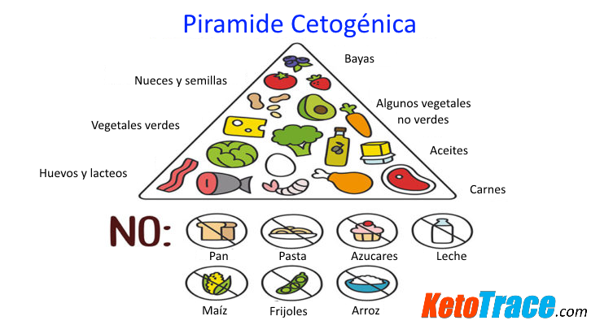

La dieta keto o cetogénica consiste en reducir el consumo de hidratos de carbono (cereales, frutas, legumbres, etc.) e incrementar el consumo de grasas buenas como el aguacate, aceite de oliva, coco, productos lácteos y carne con el fin de hacer que el cuerpo consuma la grasa para su aporte energético.
Esta dieta no se tiene que considerar sólo como una dieta para perder peso, sino como una dieta para la reeducacion metabolica la cual llevará al cuerpo a una pérdida natural de peso una vez que tu cuerpo haya entrado en el estado de cetosis.
Para entrar en el estado de cetosis normalmente es un restricción de carbohidratos de 3 días. Una vez que tu cuerpo por medio de la dieta pasa de quemar carbohidratos a quemar grasa empezarás a perder peso.
Expresado en gramos tienes que consumir entre 20 a 50 gramos de carbohidratos por día, por lo que tienes que estar revisando que tu consumo de carbohidratos no exceda esta cantidad (siempre revisa las etiquetas de informacion nutricional).
Cabe destacar que ésta no es una dieta que puedas llevar de por vida, sólo hay que hacerla hasta llegar al peso adecuado y después comenzar una dieta balanceada. Pregunta a tu nutriologo si esta dieta es adecuada para ti, qué cantidad de carbohidratos es la adecuada (20 o 50 g) y recuerda que siempre es bueno consultar con un profesional y hacerlo bajo su supervision.

Pros
- Pérdida efectiva de peso a corto plazo
- Podría ayudar a manejar la epilepsia en niños
- Podría tener efectos positivos en el tratamiento de ciertos tipos de cáncer
Cons
- Puede carecer de fitonutrientes, fibras y vitamina B
- Podría afectar tu salud estomacal
- No es sostenible
Mi experiencia
Llevo haciendo la dieta durante 6 semanas y he pasado de 72.1kg a 67.4kg, ésta es la primer dieta con la que no me quedo con hambre. Consumo 20g de carbohidratos al día, sin embargo puedo comer carne, aguacate, lacteos e incluso he disfrutado de pastel de chocolate y pizza hechos con harína de coco, más adelante postearé las recetas que hago para la dieta y podrán ver que es una dieta muy buena para quienes nos gusta comer rico.
Además de la dieta keto estoy siguiendo un horario de comida que me restringe comer después de las 8 p.m. ya que así le doy tiempo a mi estomago de digerir mientras aún estoy despierta, esto ha mejorado mi sueño y ya no he padecido de acidez.
Más información
https://www.huffingtonpost.com.mx/2017/09/07/que-es-una-dieta-ketogenica_a_23198982/
Espero les sirva esta infomación, si les gustó compártanla en sus redes sociales y no olviden consultar con un profesional de la salud.
Mis Herramientas de trabajo
Laptop: Acer Aspire R15 Convertible
Cámara: Nikon D5300
Celular: Oneplus 3T